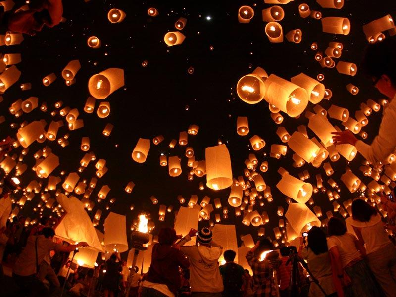

Lý giải phong tục tết trung thu về tục chơi đèn lồng
Tết trung thu không thể thiếu đi hình ảnh chiếc đèn lồng nhiều màu sắc sáng rực rỡ dưới ánh trăng vàng. Đối với người dân Trung Hoa, đèn lồng được treo trước cửa nhà và tượng trưng cho sự may mắn bình an.
Một số lại được làm thành dạng đèn hoa đăng, sau khi ghi những ước nguyện vào thì thả trôi bờ sông mang lời cầu nguyện đi xa.
Nói về nét văn hóa nữa của người Trung Hoa dịp trung thu được lưu truyền đến nay phải kể đến đèn Khổng Minh. Đèn Khổng Minh thường có kích thức lớn, dán giấy xung quanh và thắp nến ở giữa, sau khi viết ước nguyện lên đèn thì thả lên bầu trời. Trong ánh trăng vàng thì từng ngọn đèn được đồng loạt thả làm sáng rực cả một vùng trời, từng ngọn đèn tựa như những ngôi sao sáng lấp lánh gửi thời thỉnh cầu của con dân tới các vị thần linh.
Còn đối với người Việt, đèn lồng trung thu được làm cho trẻ em chơi trung thu là chính. Những chiếc đèn với vô số hình dáng từ bông hóa, cá, gấu…vô cùng xinh đẹp sáng rực đêm trung thu.
Đèn lồng Việt Nam làm thủ công từ tre và giấy gió, tô vẽ bên ngoài đèn là những nét vẽ đường thêu vô cùng đặc sắc. Đèn lồng của người Việt Nam là sự biểu hiện của ấm no và hạnh phúc gia đình.